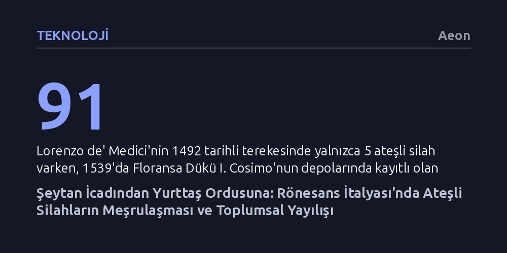

TEKNOLOJI · Aeon · 2026-10-20
16. yüzyıl İtalyası'nda başlangıçta şeytan işi sayılarak lanetlenen ateşli silahlar; yurttaş milisleri, saray estetiği ve teknolojik ilerlemelerle hızla meşrulaşarak tüm topluma yayıldı. Bu süreç, silahı ahlaki bir tabudan vazgeçilmez bir savunma ve iktidar aracına dönüştürdü.
Ateşli silahların yükselişinin yalnızca askeri zorunlulukla değil; sivil milis teşvikleri, saray estetiği ve gündelik ihtiyaçlar üzerinden toplumsal meşruiyet kazanarak gerçekleştiğini gösterir.

Rönesans denildiğinde akla ilk gelen olgular sanat hamiliği, hümanist felsefe ve klasik antikitenin yeniden keşfidir. Floransa'nın ünlü yöneticisi Muhteşem Lorenzo de' Medici gibi figürlerin zihnimizde canlanan imgesi de bu kültürel zarafetle örtüşür. Oysa Lorenzo'nun 1492 tarihli tereke kayıtları, onun beş adet taşınabilir ateşli silaha sahip olduğunu belgeler. Bu ayrıntı ilk bakışta şaşırtıcı görünebilir; zira dönemin edebiyat ve sanat çevrelerinde barutlu silahlar açıkça şeytanın bir icadı olarak yaftalanmakta ve şövalyelik onuruna bütünüyle aykırı kabul edilmekteydi. Ludovico Ariosto'nun Çılgın Orlando destanında bu yeni araçları şerefi ve yiğitliği yok eden melun bir buluş olarak nitelemesi, seçkinlerin zihnindeki derin ahlaki kuşkuyu yansıtıyordu.
Ne var ki bu ahlaki direnç yarım asır gibi kısa bir sürede çözüldü. Lorenzo'nun ölümünden yaklaşık elli yıl sonra, 1539 başlarında Floransa Dükü I. Cosimo de' Medici'nin depolarında kayıtlı ateşli silah sayısı 91'e ulaşmıştı. İtalyan sarayları silahı yalnızca kabullenmekle kalmamış, ona prestijli bir değer atfetmeye başlamıştı. Urbino Dükü 1538'de edindiği yeni bir tüfeği kendisine son derece kıymetli bir varlık olarak tanımlarken; heykeltıraş Benvenuto Cellini anılarında veba salgınının kasvetinden kaçmak için güvercin avladığını, kendi barutunu ürettiğini ve iyi nişancılığın melankolisine şifa olduğunu anlatıyordu. Ateşli silah, aristokratların elinde hızla şeytani bir tabudan saygın bir güç ve eğlence aracına dönüştü.
Ateşli silahların saraylardan çıkıp geniş halk kitlelerine ulaşmasındaki asıl belirleyici faktör, İtalyan devletlerinin askeri örgütlenme modelindeki köklü değişim oldu. 16. yüzyıl başlarında yarımadada düzenli ve daimi ordular bulunmuyor; savaşlar geçici seferberlikler ve güvenilmez paralı asker birlikleriyle yürütülüyordu. 1490'lardan itibaren yarımadayı kasıp kavuran yabancı istilalar, paralı asker sisteminin zaaflarını açıkça ortaya koydu. 1506 tarihli Floransa milis kararnamesinde belirtildiği gibi, "Yabancı ve paralı kollara çok az güven duyulabilirdi."
Niccolò Machiavelli'nin öncülüğünde kurulan Floransa yurttaş milisi, en az 10.000 kişilik bir yerel kuvvet oluşturmayı hedefledi. Bu kuvvetin her on neferinden biri ateşli silahlarla donatılacak, belediye sarayında 500 adet el tüfeği (schioppetti) hazır bulundurulacak ve mühimmat için özel bütçe ayrılacaktı. Alman şehirlerindeki sivil savunma geleneğini örnek alan bu sistem, yabancı uzman çavuşlar idaresinde her ay düzenli atış talimleri yaptırdı. Venedik'in Osmanlı sınırındaki Friuli bölgesinden İtalya'nın dört bir yanındaki şehir muhafızlarına kadar sivil milislerin hızla silahlandırılması, 16. yüzyılda ateşli silahların toplumda yayılmasını sağlayan en güçlü kurumsal motor oldu.
Ateşli silahların seçkinler katında meşruiyet kazanması, teknolojik inovasyonlar ve dönemin zanaat estetiğiyle doğrudan bağlantılıydı. O dönemin standart askeri mekanizması olan fitilli kilit (arkevüz), sürekli kor halinde tutulması gereken bir fitile muhtaçtı. Bu durum nemli havalarda silahı güvenilmez kıldığı gibi, yanan fitilin çıkardığı koku, duman ve parıltı hem av sırasında hayvanları ürkütüyor hem de askerin konumunu düşmana açık ediyordu. Bu sorunu ortadan kaldıran yenilik, çarklı kilit mekanizması oldu. Pirit taşına sürtünen çarkın kıvılcım çıkararak barutu ateşlediği bu düzenek, harici bir ateşe gerek kalmadan silahın anında ateşlenebilmesini ve gizlenerek taşınabilmesini sağladı.
Leonardo da Vinci'nin Codex Atlanticus'taki eskizlerinde de yer alan bu karmaşık mekanizma, yüksek maliyeti nedeniyle seçkinlerin vazgeçilmez statü sembolü haline geldi. Dük I. Cosimo seyahatlerinde korumalarına bu yeni Alman tarzı tabancaları taşıtıyor; Titian'ın 1548 tarihli ünlü tablosunda İmparator V. Karl, atının eyerindeki çarklı kilitli tabancalarıyla resmediliyordu. Dahası, bu silahlar mitolojik sahneler, antik kahraman figürleri ve İncil motifleriyle donatılarak saray beğenisine uygun birer sanat eserine dönüştürüldü. Avrupa'daki mezhep çatışmalarının da etkisiyle silah, şeytanın aleti olmaktan çıkıp hakiki inancı sapkınlara karşı savunmanın kutsal bir aracına evrildi; Mantova'da düke sunulan resmi hediyelerde tatar yaylarının yerini ateşli silahların alması bu kabullenişin simgesiydi.
Saraylardaki işlemeli lüks silahlar halk için ulaşılamaz olsa da, tabandaki yayılma çok daha somut ve pratik dinamiklerle gerçekleşti. Şehir yönetimleri, halkın atış kabiliyetini geliştirmek amacıyla yüksek ödüllü nişancılık yarışmaları başlattı. Venedik 1506'dan itibaren kadırga personelini tüfeğe alıştırmak için kıymetli kumaşlar ve nakit para ödülleri koyarken; Lucca Cumhuriyeti 1520'de yılda üç kez düzenlediği atış müsabakalarını vatanın hürriyetini koruma ülküsüyle gerekçelendirdi. Bir askerin yıllık kazancının 30 dukayı geçmediği bir dönemde dağıtılan gümüş kupalar ve pahalı kumaşlar, tüfek kullanımını geniş kitleler nezdinde saygın ve cazip bir faaliyete dönüştürdü.
Sivil milislerin yanı sıra kırsal yaşamın gereksinimleri de silahı sıradanlaştırdı. Çiftçiler ve hayvancılar sürüleri yırtıcılardan korumak ve zararlı hayvanları avlamak için tüfeğe yöneldi; 1552'de Bologna'da Vincenzo adlı bir sığırtmacın av tüfeği taşıma ruhsatı alması silahın tabana ne denli indiğini açıkça gösteriyordu. 1540'larda Modena kırsalında her üç haneden birinde tüfek bulundurma zorunluluğu getirilirken, 1552'de kuşatmaya hazırlanan Ferrara'da denetlenen 520 hanenin yarısından fazlasında ateşli silah mevcuttu. 16. yüzyılın son çeyreğine gelindiğinde artık çobanların dahi omzunda çarklı kilitli tüfeklerle dolaştığı bir toplumsal doygunluğa ulaşılmıştı.
Ateşli silahların toplumun her katmanına yayılması, şiddetin ve suçun doğasını da derinden değiştirdi. 1600 yılına gelindiğinde Bologna'daki cinayet vakalarında en sık başvurulan aracın ateşli silahlar olduğu kayıtlara geçmişti. Ancak adli arşivler, silahların planlı cinayetlerden ziyade öncelikle bir sindirme ve tehdit vasıtası olarak kullanıldığını gösterir. Yol kesen eşkıyalar için kurbanı vurmadan yalnızca tüfek doğrultarak teslim almak en pratik yöntemdi; silahın ölümcül gücü çoğu zaman kurbanın direnmeden teslim olmasını sağlıyordu. Buna karşılık, mekanizmanın incelenmesi sırasında kazara ateş alması sonucu yaşanan ölümler de dönemin günlük tehlikeleri arasına girdi.
Silahlanma siyasal mücadelelerin ve rejim muhalefetinin de merkezine yerleşti. İtalyan şehir devletlerinde uygulanan sürgün ve mal müsadere sistemi, sürgünler (banditi) ile siyasi muhalifler arasındaki sınırı belirsizleştirmişti. Floransa'da Medici yönetimi samanlıklara gizlenmiş tüfeklere el koyarak olası ayaklanmaları bastırmaya çalışırken, Brescia'da Venedik idaresine direnen muhaliflerin evlerinde onlarca tüfek depoladığı görülüyordu. 16. yüzyılın kapanışında ateşli silah o kadar yaygınlaşmıştı ki, silah sahibi olmak kadar silah edinmemek de bilinçli bir karara dönüştü; ancak yarattığı orantısız yıkım gücü nedeniyle bu ölümcül teknolojiye yönelik ahlaki tedirginlik hiçbir zaman tam anlamıyla yok olmadı.